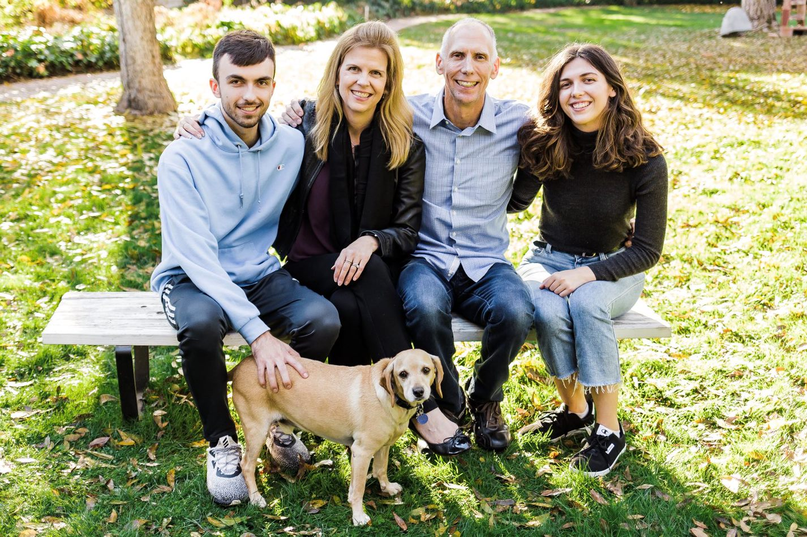
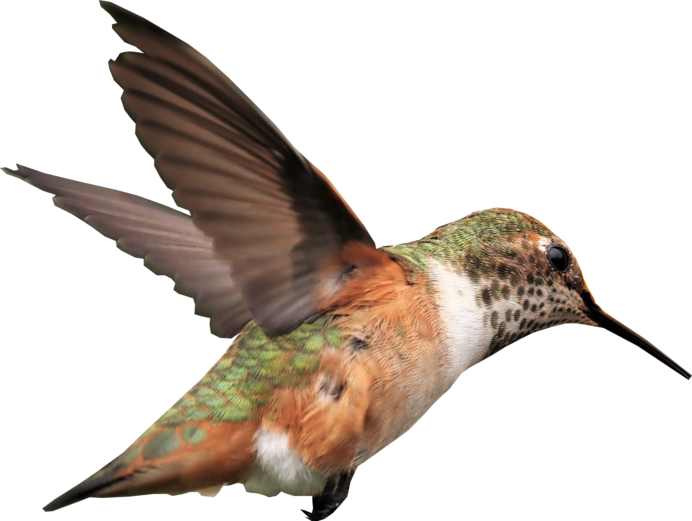

It’s a Magical World, not Magical Thinking…
About the Content Creator
Stuart Hindle, retired, is a parttime triathlete/investor (and now author/video creator!).
humzillion@gmail.com
FinisherPix.com
FinisherPix.com
Stuart, a Calgary, Alberta native, retired from corporate tech life at the age of forty to spend more time with his family in S. California (including a tour of duty as “Mr. Mom”) and explore other pursuits. He became a part-time investor and aspiring triathlete, having overcome multiple traumatic accidents to make the podium at national competitions. Racing in honor of loved ones impacted by cancer and other adversities, Stuart has competed at amateur world championships for both Team USA and Canada. Little did he know that this all would lead to the weird and wonderful encounters documented in his book and subsequent HumZillion videos/other content. He hopes his experiences can be a source of inspiration for others facing adversity and seeking more purpose in life. He has an MBA degree from Harvard Business School and a BSc in Mechanical Engineering from the University of Calgary.
Intentions/Future Plans
It is not my intent to push my newfound view of spirituality, after decades of being a near-atheist, on others, including my own family—that is a very personal journey for each of us. However, I do hope that the facts (e.g. photos, videos, communications, etc.) documented in my various content (versus my interpretation of them—e.g. what may be behind them occurring, which is certainly more debatable) form the basis to further your own journeys of self-discovery, wherever that may take you, and help you to process/overcome whatever adversity you or your loved ones might be facing. Over time, I plan to have more specific content tailored to various interest groups (e.g. atheists/agnostics, Christians, other religious/spiritual groups, probability/other experts within the science community, Jungian fans, people grieving the loss of a loved one or striving to overcome traumatic injuries like I did, etc.).
[For full disclosure, my path led me to God/Jesus in a spectacular manner—I hope you all have a similarly wondrous journey!]
A theme throughout my content, documenting my own and others’ experiences, is that of leaning on this spiritual realm / omniscient, caring entity to overcome adversity, and by doing so, it then becoming a source of inspiration to help others facing adversity. I feel these documented experiences are God’s/the universe’s (versus mine) that were meant to be shared to help others. In addition to creating additional short videos for the HumZillion YouTube channel and other platforms, I hope to ultimately produce a documentary for streaming, as well as publish a much shorter book for mass consumption, focused more on some of the key highlights and takeaways throughout this journey. Along the way, it would be wonderful to interview folks with varying experiences and takes on Life, the Universe, and Everything for future HumZillion podcast episodes. Perhaps if we meet, it won’t be by chance…
Peace + Blessings!
Stu
[Note: My interest is not monetarily driven. I simply wish to help people overcome adversity and have a more fulfilling life/afterlife!]